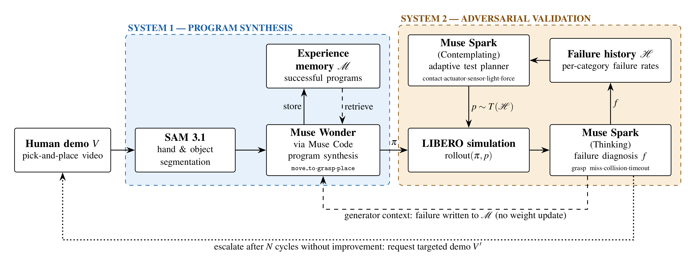
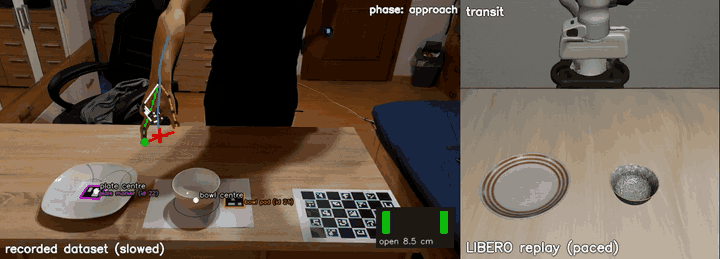

Work in progress Meta Global Hackathon
Idea: teach a robot a task from one demo, then let an adversary break the skill. A frozen model writes the policy. Nothing is trained. The skill improves through context only.
ANTS is a project for the Meta Global Hackathon. The code is on GitHub.

One robot, one task, one policy. Each new task or robot needs new data and fine-tuning. Data is the bottleneck.
The adversary does not pick test cases at random. It looks for failure cases. It spends the test budget on the categories that are most likely to break the policy. Each test stays inside a bounded severity.
The gate keeps the result safe. A policy that fixes one failure case cannot break a case that passed before. Robustness never goes down.
| Block | System | Tool |
|---|---|---|
| Hand and object segmentation | 1 | SAM 3.1 |
| Policy synthesis, with experience memory | 1 | Muse Wonder (via Muse Code) |
| Test planner, uses the failure history | 2 | Muse Spark |
| Rollout of the policy under a perturbation | 2 | LIBERO simulation |
| Failure diagnosis (grasp miss, collision, timeout) | 2 | Muse Spark |
hurobo turns a phone video of a human hand into robot demos in LIBERO. ANTS also starts from a human video and runs in LIBERO. The clip below is from hurobo: the recorded human demo (left) beside its robot replay (right).

Results coming. All numbers will come from logged runs on a held-out test set.